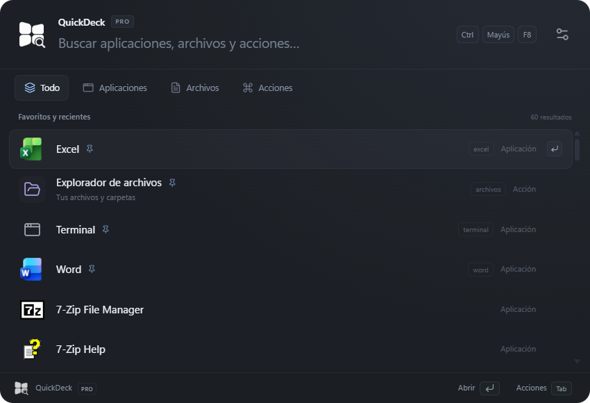
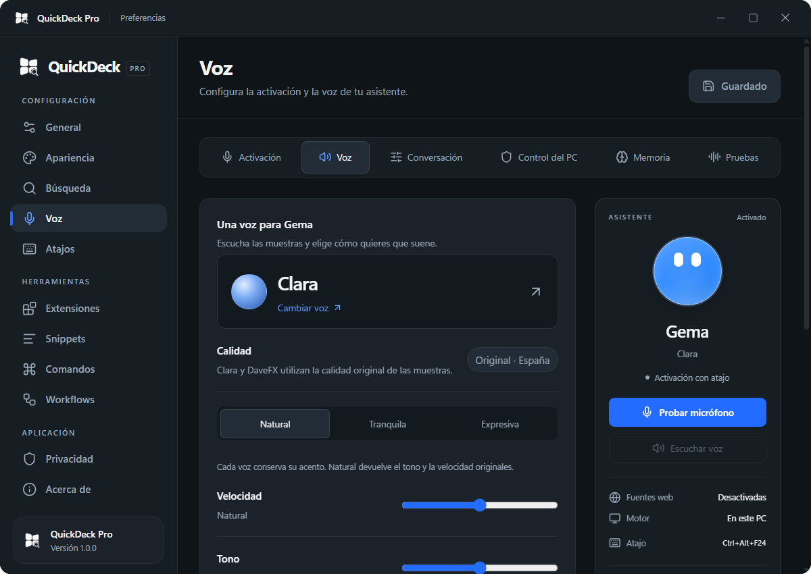

Su nombre. Su voz. Su color.
Elige Clara o DaveFX, ajusta cómo habla y cambia el nombre y el color de la esfera. Actívala con un atajo o con la llamada por voz opcional.
Abre aplicaciones, encuentra archivos y ejecuta tus acciones
desde una sola ventana. Diseñado para Windows 11.

Captura real de la interfaz. Los resultados se adaptan a las aplicaciones de tu equipo.
CONOCE A GEMA
Una voz para las pequeñas cosas de tu día.
Abre una aplicación, encuentra Descargas o pregunta qué hora es. Gema reúne la conversación y las acciones de QuickDeck en un asistente que puedes hacer tuyo.
Así se configuraAcciones locales · Con tu permiso
Elige Clara o DaveFX, ajusta cómo habla y cambia el nombre y el color de la esfera. Actívala con un atajo o con la llamada por voz opcional.
Abre aplicaciones y carpetas, ajusta el volumen o crea documentos de texto. Tú habilitas los controles. Las acciones de energía tienen una cuenta atrás cancelable.
Haz preguntas relacionadas y activa, si quieres, la memoria local. Puedes revisar y borrar lo guardado desde sus ajustes. El tiempo y las noticias requieren permiso para consultar Internet.
Descarga Qwen desde los ajustes y conversa sin la cuota de un servicio de IA. Las órdenes de Windows se ejecutan con las funciones nativas de QuickDeck.
El modelo se descarga por separado. Utiliza varios GB de RAM mientras está cargado y la velocidad depende del equipo. Puedes mantenerlo preparado durante 3 minutos entre preguntas; esta opción viene desactivada.
PREPARA TU ASISTENTE
Todo en Preferencias → Voz.
Prepara los componentes de reconocimiento y elige tu forma de activación.
Prueba las voces, ajusta su estilo y personaliza la esfera.
Configura el motor de conversación, la memoria, el control del PC y las fuentes web.

DENTRO DE QUICKDECK
El buscador se ocupa de localizarlo.
Tú decides qué abrir.
Busca las aplicaciones de tu equipo, abre la que necesitas y fija tus favoritas. QuickDeck recuerda las que más utilizas.
›terminal
Añade las carpetas que quieras buscar. Encuentra documentos por nombre o extensión y abre su ubicación en el Explorador.
›ext:pdf presupuesto
Resuelve una cuenta sin abrir otra aplicación. Usa prefijos para buscar en Google, GitHub o YouTube desde tu navegador.
›15% de 250 → 37,5
Guarda textos que repites, crea comandos propios y encadena acciones en un workflow. Todo desde el mismo lanzador.
›/firma
DEL TECLADO A LA ACCIÓN
No hace falta recorrer menús.
El lanzador aparece donde estás trabajando.
Tu atajo, incluso desde otra aplicación.
Escribe un nombre y navega por los resultados.
Abre el resultado. Tab muestra otras acciones.
ÚLTIMA VERSIÓN
14 de noviembre de 2026 · Revisión 1.0.25
Gema y QuickDeck, más cerca de tu forma de trabajar.
El instalador actualiza una versión anterior sobre la instalación existente, sin pedir desinstalarla primero. Cierra QuickDeck desde la bandeja y ejecuta el nuevo instalador oficial.
Las nuevas versiones se descargan desde esta página. Tú decides cuándo instalarlas.
REGISTRO DE CAMBIOS
Explora cada revisión y sus novedades.
La versión pública actual sigue siendo 1.0.0.
Para uso habitual, elige la revisión actual. El instalador mantiene la protección frente a versiones anteriores.
preguntas como «dime qué ves en la pantalla», «qué ves en la pantalla» o «puedes decirme qué aparece en mi pantalla» activan la visión local, con el permiso correspondiente, en lugar de acabar como una consulta de texto. Una captura recién tomada también sirve de contexto para «dónde tengo que pulsar», aunque todavía no se haya analizado. Ese foco se limita a la conversación, caduca y se descarta al cambiar de tema o cerrar; las imágenes y las respuestas visuales siguen sin enviarse al servicio de conversación. Se conservan la miniatura, la vista previa, la copia, la exportación y el halo verde. La web incorpora un índice de versiones con las notas y las descargas de las entregas publicadas; los enlaces históricos permanecen asociados a su revisión.
las capturas aparecen como miniaturas en la conversación. Al pulsarlas se abre una ventana adaptable con la imagen original, Copiar imagen y Guardar como para elegir otra ubicación local. La exportación conserva el PNG y no sobrescribe archivos; copiar requiere pulsar su botón y sustituye el contenido del portapapeles. Los bordes se vuelven verdes durante el análisis visual local y recuperan el blanco al terminar; cancelar oculta el indicador inmediatamente. Se puede pedir ayuda y continuar con preguntas relacionadas sobre la misma captura, sin enviarla ni compartir su contexto con el servicio en Internet. Para obtener una imagen nueva se pide volver a mirar la pantalla. Las capturas de la conversación permanecen temporalmente en memoria, con límites de cantidad, tamaño y caducidad, y se eliminan de la sesión al cerrarla, incluida la vista previa. Se conservan los modelos ya preparados y la corrección de Preferencias desde la bandeja.
visión local opcional con Qwen3-VL 2B, descarga independiente de 1,58 GB. Con el permiso habilitado, una petición explícita como «mira mi pantalla y explícame este error» analiza una captura del monitor donde está el ratón. La imagen se procesa localmente, no se guarda y no se envía al servicio de conversación, tampoco como contexto posterior. No hay grabación continua ni clics autónomos. El proceso visual se libera al responder, fallar o cancelar. Un permiso separado permite «haz una captura de pantalla» y guarda archivos PNG nuevos en Imágenes/QuickDeck sin cambiar el portapapeles. «Busca en Google…» abre la búsqueda con el motor configurado y codifica la consulta, respetando la extensión web. Las instrucciones del modelo conversacional describen las acciones nativas reales y los permisos activos para evitar afirmaciones genéricas de falta de acceso al PC; siguen existiendo límites de funciones y de comprensión. Se conservan voces, preferencias, memoria y modelos anteriores. Se corrige además el bloqueo al crear Preferencias por primera vez desde el menú de bandeja. La apertura pasa a un comando asíncrono, incluyendo Acerca de y Configurar voz, y el menú recupera sus controles al terminar la acción.
se eliminan los títulos y descripciones repetidos bajo las seis pestañas de Voz, conservando los controles, sus etiquetas y la vista lateral del asistente. La web oficial incorpora una sección dedicada a Gema, sus opciones de voz y personalización, el modelo local opcional, los permisos y las consultas de información actual. Se añade una captura real de sus ajustes y se actualizan las novedades y las preguntas frecuentes. Se conservan preferencias, memoria, modelos, el contador de descargas y los enlaces de versiones anteriores.
nuevo espacio de configuración de Voz, con formularios y vista lateral del asistente, estado real, voz seleccionada, atajo, permiso de fuentes web y controles de prueba. Se incorpora una pestaña Pruebas con ejemplos reutilizables y se reorganizan los componentes locales en el lateral. El diseño se adapta a ventanas estrechas y conserva temas claro/oscuro, color de la esfera, navegación por teclado y guardado explícito. Se reconocen órdenes como «sube el volumen al 30 %», «sube el volumen del ordenador al 30 %» y «entra a la carpeta de Descargas» mediante las acciones nativas, respetando el permiso de Control del PC. «Qué tiempo va a hacer mañana en Granada» y otras formas de pedir una previsión activan la consulta meteorológica; con las fuentes de Internet desactivadas se explica el permiso necesario, y activadas se obtienen datos de la fuente pública. Se conservan modelos, preferencias y memoria.
nuevo menú de bandeja con identidad de QuickDeck, tema de la aplicación, navegación por teclado y acceso a Preferencias, activación por voz y Acerca de. El apartado Voz se reorganiza en Activación, Voz, Conversación, Control del PC y Memoria, con componentes descargados y zona de prueba desplegables. Se corrige el margen de audio previo para conservar el inicio de las frases con paquetes cortos de cancelación de eco y se evita cambiar de captura a mitad de una intervención. Nueva opción Priorizar precisión al reconocer, activada inicialmente, que utiliza el contexto completo de Whisper y puede aumentar la espera. Las tareas de archivos con una extensión mal transcrita aceptan la aclaración «he dicho que sea punto TXT» durante la misma conversación; se conservan nombre, contenido y ubicación, los permisos y la protección frente a sobrescrituras. La aclaración caduca a los 45 segundos y se descarta al cerrar o cambiar de tema. No se cambia el modelo descargado ni se promete precisión universal con cualquier voz o micrófono.
reconocimiento más flexible de tareas de archivos: «entra a la carpeta Descargas y crea un documento llamado Hola» crea Hola.txt mediante Windows, sin consultar al modelo de conversación. Se admiten también «ve a» y documentos sin especificar «de texto», manteniendo el límite a archivos .txt nuevos y sin sobrescritura. La detección inicial amplifica de forma limitada las llamadas suaves y permite verificar candidatos con la interjección incompleta; la comprobación acústica sigue exigiendo la llamada configurada para reducir activaciones ajenas. Las transcripciones aisladas que coinciden con frases típicas de subtítulos, como «Suscríbete», requieren corroboración de un segundo reconocedor local. La palabra sigue permitida cuando se pronuncia y se confirma; estas medidas reducen errores, sin garantizar reconocimiento perfecto con cualquier micrófono o ruido.
nuevas tareas nativas de archivos con varios pasos. Gema puede abrir Escritorio, Documentos o Descargas, crear una carpeta y guardar un documento .txt con el contenido dictado, sin sobrescribir archivos ni depender de un editor. Se admiten órdenes con puntuación y verbos repetidos; las instrucciones no compatibles se explican antes de modificar archivos. El permiso se gestiona en Voz → Conversación → Control del PC. Corregido el cierre del halo blanco durante la cancelación, también si el modelo sigue respondiendo. Nueva opción, desactivada de inicio, para conservar Qwen preparado hasta tres minutos después de la última respuesta y liberar después su memoria automáticamente. Reutilizarlo evita cargar el proceso de nuevo, pero la velocidad depende del equipo y de la respuesta.
corregida la apariencia de la esfera al producirse un error; mantiene su forma circular y el color elegido en todos los estados. Se refuerza la apertura del panel de Gema después de cargar su interfaz y se evita que una lectura antigua del estado oculte controles de una conversación ya activa. Se recupera el estado al recargar o volver a mostrar el panel, manteniendo el cierre y los controles del micrófono.
corregida la carga del reconocimiento en cuentas de Windows con tildes, ñ y otros caracteres Unicode. El proceso utiliza UTF-8 sin cambiar la configuración regional de Windows. Se comprueban los archivos necesarios del motor y del modelo. El nuevo botón Reparar reconocimiento, en Voz, vuelve a verificar los paquetes y restaurar sus archivos aunque antes aparecieran preparados. La preparación comprueba que el modelo puede cargarse antes de darlo por listo. Se conserva el modelo de conversación local, las voces y los datos del usuario.
memoria personal más útil, con apodos, varios gustos y recuperación de notas antiguas. El modelo local puede utilizar los recuerdos guardados para responder; esos datos siguen en el PC y no se envían a Groq. Un nuevo filtro local de presencia de voz ayuda a descartar silencios y ruido antes de transcribir. La corrección contextual ajusta nombres de aplicaciones cuando hay una única coincidencia. Gema permite programar acciones de energía, aperturas de aplicaciones y recordatorios por intervalo o a una hora concreta. Las rutinas se guardan localmente y se pueden cancelar desde Voz → Conversación; requieren QuickDeck abierto y el equipo disponible. Las acciones de energía conservan el permiso y veinte segundos de cuenta atrás. Un nuevo permiso habilita volumen, reproducción multimedia, ventanas, creación de carpetas, copia de rutas y apertura de ubicaciones. El dictado y las pulsaciones muestran su destino y requieren confirmación antes de enviarse. Se mantienen el modelo local, las voces, el actualizador y los datos existentes.
Gema incorpora un motor de conversación local en fase de prueba, con Qwen de 4.000 millones de parámetros. Se prepara de forma opcional desde Voz → Conversación mediante una descarga de 2,52 GB y funciona sin cuentas ni cuota de Groq. Se recomiendan 16 GB de RAM; el tiempo de respuesta y la precisión dependen del equipo. El proceso del modelo termina después de responder o cancelar. Las consultas del tiempo y las noticias siguen necesitando permiso para acceder a sus fuentes en Internet. Se optimiza la transcripción de frases cortas y la verificación de llamadas repetidas, manteniendo los controles de confianza. Los errores de servicio se muestran como avisos y no se reutilizan como respuestas de Gema. Acerca de indica el tamaño del instalador de las nuevas actualizaciones antes de descargarlo. Se conservan las preferencias, las voces y los datos existentes.
nueva esfera de Gema con dos ojos que miran hacia el ratón, también cuando el cursor está fuera del panel. Personaliza su color desde Preferencias → Voz → Activación, con seis tonos y un selector personalizado. La vista previa permite comprobar el resultado antes de guardar; los ojos mantienen el contraste con los colores claros. Se conservan la transparencia, los niveles de voz y los controles del micrófono. El seguimiento se detiene al cerrar la conversación y no requiere descargas adicionales.
Gema estrena un panel junto al borde izquierdo, con una esfera renovada que reacciona a la voz y controles más compactos. La activación separa mejor las frases, recorta silencios y refuerza las llamadas en voz baja. Puedes decir «Ey Gema, abre…» de seguido, sin repetir la orden. Las respuestas son más directas y naturales; el tiempo ofrece primero la temperatura, el estado del cielo y el rango del día. La probabilidad de lluvia se añade cuando la preguntas. Se conservan las voces, las preferencias y la instalación sobre versiones anteriores. La precisión depende del micrófono y el ruido ambiente.
Gema incorpora las voces Clara y DaveFX, en español de España, elegidas a partir de las muestras A y C. Puedes escucharlas y prepararlas desde el selector de Voz. Comparten una descarga opcional de unos 171 MB y después funcionan localmente, sin cuentas ni servicios de voz de pago. La elección se aplica al pulsar Guardar cambios. Se conservan las voces anteriores y las preferencias existentes; las instalaciones nuevas seleccionan Clara inicialmente. Se han comprobado la descarga verificada, las muestras, la cancelación y el guardado de cada voz.
la barra de título integra los controles de minimizar, maximizar y cerrar directamente sobre su fondo, sin la cápsula que los rodeaba. Se mantiene la respuesta visual de cada botón al pasar el cursor y el resto del diseño de la revisión anterior.
nueva identidad visual en toda la aplicación, con fondos carbón, tarjetas grises, texto más legible y azul como acento principal. Lanzador, preferencias, editores, selector de voces y conversación de Gema comparten ahora un diseño coherente, también en modo claro. La navegación se organiza por secciones y los controles de guardado permanecen accesibles. QuickDeck comprueba automáticamente las actualizaciones al iniciarse y muestra Actualizar junto a Acerca de cuando hay una revisión nueva. La descarga y la instalación siguen requiriendo tu confirmación; si no hay conexión, puedes reintentar sin interrumpir el trabajo. Se conservan los datos, las opciones personales y los modelos de voz instalados.
corregido el cierre del panel de Gema para que la esfera y sus controles desaparezcan al terminar la conversación, también tras varias aperturas seguidas. Con el permiso de acciones de energía activado, las órdenes de apagar, reiniciar, suspender o bloquear inician directamente una cuenta atrás de veinte segundos, sin confirmación adicional. Puedes cancelarla desde el panel, hablando o cerrando el asistente. El permiso permanece desactivado por defecto. Se conservan las preferencias de voz y los modelos locales existentes.
preferencias de voz renovadas, organizadas en Activación, Voz, Conversación y Memoria. La llamada se genera automáticamente a partir del nombre del asistente y se activa o desactiva con un interruptor, sin escribir frases. La escucha muestra su estado real y ofrece reintento si el micrófono no responde. Al abrir una aplicación se cierra la conversación; también puedes solicitar el cierre normal de sus ventanas. Las acciones de energía incorporan una cuenta atrás cancelable de veinte segundos después de confirmar. Se mejora la continuidad del panel entre conversaciones y se mantienen el reconocimiento local y los controles de privacidad.
reconocimiento de voz renovado. Gema transcribe las órdenes con Whisper local en español y verifica la llamada antes de activar la conversación. El nombre suelto deja de abrir el asistente; puedes elegir una frase exclusiva para evitar confusiones con otras personas. El panel se centra en los mensajes, con burbujas de mayor contraste, texto más grande y sin cabecera, campo de escritura ni avisos de escucha permanentes. Se mantienen los botones inferiores de micrófono y cierre. El reconocimiento mejorado necesita una descarga adicional de unos 189 MB respecto al anterior; el audio permanece en el ordenador. La transcripción puede tardar unos segundos según el equipo.
Gema se integra mejor con tu equipo. El panel de conversación deja ver el escritorio y el halo blanco gana amplitud. Las órdenes para abrir aplicaciones admiten expresiones como «ábreme» y pequeñas variaciones de reconocimiento, con selección manual cuando hay dudas. Consulta la hora, la fecha, la batería, la memoria disponible, el espacio libre o el tiempo de actividad directamente en Windows. El nuevo Control del PC permite solicitar apagado, reinicio, suspensión y bloqueo: está desactivado de inicio y cada operación requiere confirmación en pantalla. Se mejora la pronunciación de ChatGPT y se aclara el ajuste Natural de voz. Esta revisión conserva el sistema de escucha y cancelación de eco anterior.
una conversación más fluida con Gema. Nuevo selector visual de voces con muestras, opción de voz de alta calidad y panel flotante con mensajes y control del micrófono. Las nuevas peticiones pueden interrumpir la respuesta anterior; la escucha durante la reproducción utiliza cancelación de eco de Windows y depende del dispositivo de audio. Activa el contexto temporal para enlazar preguntas, con un máximo de seis mensajes y sin compartir recuerdos guardados ni audio. Respuestas más cercanas, mejor tratamiento de errores y previsión del tiempo de hasta siete días. La IA mantiene una cuota gratuita compartida.
Gema incorpora tres voces neuronales locales, reconocimiento de español y respuestas con IA mediante Groq. Consulta el tiempo y las noticias con fuentes, recuerda datos en el equipo y muestra un halo blanco que reacciona al audio. Prepara la voz y el reconocimiento desde Preferencias → Voz. La conexión de IA es opcional y tiene una cuota gratuita compartida; el audio y los recuerdos permanecen en el PC.
Se conserva el instalador de esta entrega. No hay un registro separado de sus cambios.
Gema llega en la versión 1.0.0: abre aplicaciones con la voz y muestra bordes de colores mientras escucha. Actívala en Preferencias → Voz y personaliza su nombre, voz y atajo. Se mantienen la búsqueda de carpetas, los filtros como *.exe y las actualizaciones desde Acerca de.
Edición anterior a la integración de Gema. Se conserva su instalador oficial.
QUICKDECK PRO PARA WINDOWS
Descarga la versión oficial. Instala, configura tu atajo
y empieza a buscar.
Versión inicial sin firma digital. Windows puede mostrar un aviso de editor desconocido. Comprueba el archivo y su procedencia antes de instalarlo.
Descarga cada nueva versión desde esta página. No necesitas desinstalar una versión anterior para actualizar con este instalador.
Puedes instalar y usar las versiones oficiales. Comparte esta página; redistribuir archivos requiere autorización.
Leer la licenciaEl hash permite comprobar que el archivo descargado coincide con el publicado.
Descargar hashes del instalador y portableLA COMUNIDAD, EN DISCORD
Comparte cómo lo usas, propone mejoras y cuéntanos si algo falla.
Un lugar para seguir construyendo la aplicación.
LO QUE NECESITAS SABER
Activa Analizar mi pantalla a petición y prepara el modelo visual en Preferencias → Voz → Control del PC. Es una descarga opcional adicional de 1,58 GB; se recomiendan 16 GB de RAM. Dile «mira mi pantalla y explícame este error». Analiza el monitor donde está el ratón, localmente y en ese momento. La captura se mantiene temporalmente en esta conversación para verla y hacer preguntas; se elimina de la sesión al cerrarla y no se envía al servicio de conversación. Puede equivocarse con detalles pequeños. No hay grabación continua ni clics autónomos; el análisis puede tardar varios segundos según el equipo.
La conversación con el modelo local funciona sin Internet una vez descargados los componentes necesarios. El tiempo, las noticias, las descargas y las actualizaciones sí necesitan conexión. Autoriza las fuentes web en Preferencias → Voz → Conversación para consultar información actual; el modelo local por sí solo no tiene datos en directo.
Gema forma parte de QuickDeck. Sus componentes de voz se preparan desde los ajustes y el modelo de conversación local es una descarga opcional de 2,52 GB. Se recomiendan 16 GB de RAM para ese modelo; consume varios GB mientras está cargado. No necesitas descargarlo para utilizar el lanzador.
Las acciones compatibles incluyen aplicaciones, carpetas, volumen, documentos de texto y rutinas. Los controles adicionales se habilitan en los ajustes. Las acciones de energía muestran una cuenta atrás de 20 segundos que puedes cancelar. QuickDeck debe estar ejecutándose para que funcionen las rutinas programadas.
Un equipo con Windows 11 de 64 bits. QuickDeck utiliza Microsoft Edge WebView2; el instalador comprueba si está disponible y puede descargarlo si falta. No necesitas instalar Rust, Node.js ni herramientas de desarrollo.
El atajo inicial es Alt + Espacio. Si otra aplicación lo utiliza, puedes elegir una combinación distinta en Preferencias → Atajos. Escape o un clic fuera ocultan el lanzador; para cerrar QuickDeck por completo, usa Salir desde la bandeja del sistema.
Descarga el instalador nuevo desde esta página, sal de QuickDeck desde la bandeja y ejecútalo con la misma cuenta de Windows. El asistente actualiza una versión anterior sin pedir desinstalarla primero. Puedes buscar actualizaciones en Preferencias → Acerca de, descargarlas y confirmar su instalación desde la app. La edición portable se actualiza manualmente.
Esta versión todavía no tiene firma digital. Windows o tu navegador pueden mostrar un aviso de editor desconocido. Comprueba la procedencia del archivo y su SHA-256 antes de instalarlo. No se ha completado una campaña de instalación y actualización en equipos limpios con todas las configuraciones de Windows.
Puedes compartir el enlace a esta página para que descarguen la versión oficial. La licencia permite instalar y usar el programa para uso personal o profesional. Alojar o redistribuir sus archivos, o publicar actualizaciones, requiere autorización escrita del titular. Los componentes de terceros conservan sus propias licencias.